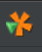
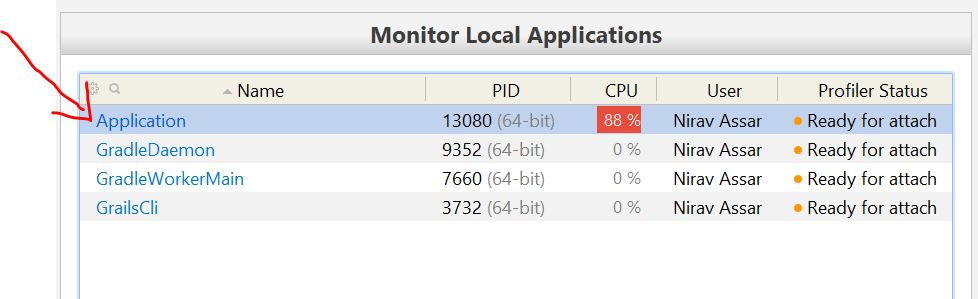

// missing snippet: ../initial/grails-app/controllers/demo/StudentController.groovy3 Evaluating the Application
The guide comes built with a simple application created for you. The purpose of the application is to have ready-made contrived examples of code which trigger performance issues and cause the tool to display memory, CPU, and heap problems.
The application is titled Grails YourKit Profile and has a simple domain object Student. The application has several links
that trigger operations for the purpose of inducing performance issues. In summary, the application has the ability to:
-
insert a large amount of students in the database (with random names and grades)
-
delete students that have a grade less that an A
-
print the students to the screen
-
import a spreadsheet of student entries
Browse the Code
Please take a moment to browse through the code and familiarize yourself with the important classes of the application.
StudentController which routes to service functionality of insert, delete, print, import.
grails-app/controllers/demo/StudentController.groovy
StudentDataService: a GORM Data Service which
takes the work out of implemented service layer logic.
grails-app/services/demo/StudentDataService.groovy
// missing snippet: ../initial/grails-app/services/demo/StudentDataService.groovyStudent - Domain object used to store a student
grails-app/domain/demo/Student.groovy
// missing snippet: ../initial/grails-app/domain/demo/Student.groovyStudentService - Service which implements the operations of the application
grails-app/services/demo/StudentService.groovy
// missing snippet: ../initial/grails-app/services/demo/StudentService.groovyindex.gsp - The UI of the application which contains the links of the front page
grails-app/views/index.gsp
// missing snippet: ../initial/grails-app/views/index.gspStudentServiceSpec and StudentServiceIntegrationSpec - Test classes used to validate the functionality of the service. (For convenience)
src/test/groovy/demo/StudentServiceSpec.groovy
// missing snippet: ../initial/src/test/groovy/demo/StudentServiceSpec.groovysrc/integration-test/groovy/demo/StudentServiceIntegrationSpec.groovy
// missing snippet: ../initial/src/integration-test/groovy/demo/StudentServiceIntegrationSpec.groovyRun the application
Use the command below to run the app. Trigger some of the functionality initially to get familiar. Later we will run the operation within the context of the profiler.
$ ./gradlew bootRunApplication Front Page

3.1 Install YourKit
Go to the YourKit page and download the appropriate installation package. YourKit offers a 15 day evaluation license. It also has options for a per-seat and corporate licenses. Note that YourKit offers a cheaper license for students, while also offering a free license for open-source projects.
IDE Integration
Once the YourKit profile is installed, we can integrate the tool into an IDE. Note that this guide uses IntelliJ IDEA. Follow the instructions for IDE integration
3.2 Start Profiling
There are two ways to bind the profiler to a running application. Either one is preferable:
-
Bind After Application Running
-
This type of binding relies on the conventional Grails startup of the application, but at times binding may not be instant with the attachment or other profiling functions.
-
Start the application with the command
grails run-appor use the Run Configuration in the IDEGrails: initial -
Start the YourKit Profiler and in the Monitor Local Applications section, click on the
ApplicationPID. -
Initiate the binding early in the application startup process for best results.
-
-
Bind on Startup
-
This type of binding results in quicker response times, but requires some startup configuration.
-
Create a Run Configuration with the main class
demo.Application. Be sure to set theWorking Directorytograils-yourkit-profiling\initial, and also set theUse of classpath moduletoinitial_main. -
In the
VM Options:set it to-Xmx512m -Xms512m. The VM in this Startup ignores the build.gradle entry. -
Start the application with the pinwheel icon from your IDE. Since Grails 3 relies on Gradle for its lifecyle management, in IntelliJ, the pinwheel icon is not active unless you start the application from
Application.groovy.
-
Pinwheel icon

Monitor Local Applications

3.3 Insert Students
Once the application is binded to the profiler we are ready to execute operations. We will need to generate some data into the application.
Execute the Insert Students operation, which will generate 20,000 student entries with random names and
grades. At this point we are ready to continue with profiling in the following sections.